GEO数据库使用教程¶
TCGA** | GEO | 文献阅读 | 数据库| **理论知识
R语言** | Bioconductor | 服务器与**Linux
GEO数据库全称GENE EXPRESSION OMNIBUS，是由美国国立生物技术信息中心NCBI创建并维护的基因表达数据库。它创建于2000年，收录了世界各国研究机构提交的高通量基因表达数据，也就是说只要是目前已经发表的论文，论文中涉及到的基因表达检测的数据都可以通过这个数据库中找到。关键是这个数据是免费的！
NCBI Gene Expression Omnibus（GEO）作为各种高通量实验数据的公共存储库。这些数据包括基于单通道和双通道微阵列的实验，检测mRNA，基因组DNA和蛋白质丰度，以及非阵列技术，如基因表达系列分析（SAGE），质谱蛋白质组学数据和高通量测序数据。
在GEO最基本的组织层面，有四种基本实体类型。前三个（样本，平台和系列）由用户提供; 第四，数据集由GEO工作人员根据用户提交的数据进行编译和策划。
一.检索¶
检索界面，网址：http://www.ncbi.nlm.nih.gov/geo
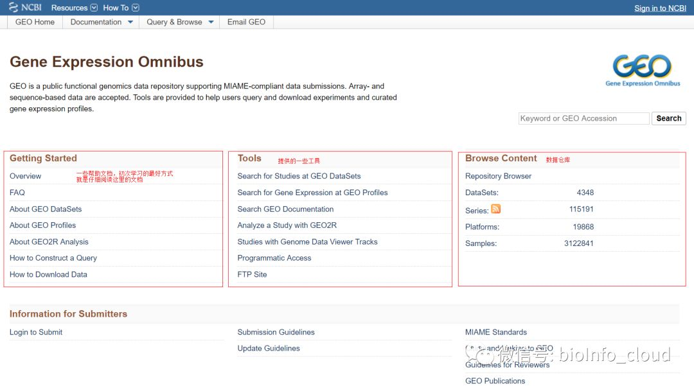
或者通过NCBI首页，All Databases下拉框中选择GEO DataSets，输入关键词即可搜索。

这里以检索肺癌（lung caner）的数据为例。

搜索结果可以通过7来设置每页显示个数，通过8选择排序方式，可以通过左侧的选项对搜索结果进行筛选。Entry type有四种:Datasets，Series，Samples，Platforms。分别对应的是，GEO Dataset (GDS) 数据集的ID号、GEO Series (GSE) 研究的ID号、GEO Sample (GSM) 样本ID号和GEO Platform (GPL) 芯片平台。
平台¶
平台记录描述阵列上的元件列表（例如，cDNA，寡核苷酸探针组，ORF，抗体）或可在该实验中检测和定量的元件列表（例如，SAGE标签，肽）。每个平台记录都分配有唯一且稳定的GEO登录号（GPLxxx）。平台可以引用多个提交者提交的许多样本。
样品¶
样品记录描述了处理单个样品的条件，它经历的操作以及从中得到的每个元素的丰度测量。每个样品记录都分配有唯一且稳定的GEO登录号（GSMxxx）。Sample实体必须仅引用一个Platform，可以包含在多个Series中。
系列¶
系列记录定义了一组被认为是组的一部分的相关样本，样本如何相关，以及它们是否以及如何排序。A系列提供了整个实验的焦点和描述。系列记录还可能包含描述提取数据，摘要结论或分析的表格。每个系列记录都分配有唯一且稳定的GEO登记号（GSExxx）。
数据集¶
GEO DataSet（GDSxxx）是GEO样本数据的精选集合。GDS记录代表了一系列具有生物学和统计学意义的GEO样本，构成了GEO数据显示和分析工具套件的基础。GDS中的样本指的是同一个平台，也就是说，它们共享一组共同的探测元素。假设GDS中每个样本的值测量值以等效方式计算，即背景处理和标准化等考虑因素在整个数据集中是一致的。通过GDS子集提供反映实验设计的信息。
记住大小关系：一个GDS可以有多个GSM，一个GSM可以有多个GSE，至于GPL，一般不接触，我们通常接触的都是GSE系列（一个GSE里面有多个GSM）的数据。
接下来的几个就好理解了，2是指物种类型，点击一下会弹出一个对话框，选择自己要的就可以对搜索结果进行筛选了，也可以直接点击9处进行筛选，一般不是人就是鼠，通常是选择人。
3通过研究类型进行筛选，比如甲基化，单核苷酸突变等进行筛选。

4是根据作者进行筛选，个人感觉一般用不到。5是属性名称，表示数据来自于组织还是特定的细胞类型。6是指初版日期。
上面是通过关键词检索，只是为了让大家了解一下检索页面，通常在文章中我们会看到作者都是用GSE号，我们知道GSE编号，我们也可以直接通过检索GSE编号获取信息，同时也可以通过GDS***,和GSM来检索。GSE编号检索比较常用。
GDS编号检索结果页面，以GDS402为例

GSE编号检索结果页面


soft和miniml都是表示该platform的基础信息，比如GPL编号，上传日期等，soft文件的部分内容如下:
^DATABASE = GeoMiame!Database_name = Gene Expression Omnibus (GEO)!Database_institute = NCBI NLM NIH!Database_web_link = http://www.ncbi.nlm.nih.gov/geo!Database_email = geo@ncbi.nlm.nih.gov^PLATFORM = GPL20814!Platform_title = Human miRNA Array miRbase release 19!Platform_geo_accession = GPL20814!Platform_status = Public on Jun 12 2017!Platform_submission_date = Aug 18 2015!Platform_last_update_date = Jun 12 2017
在soft文件中，每种类别的信息以^开头，常见的类别如下所示
DATABASE
PLATFORM
SAMPLE
SERIES
DATABASE代表GEO数据库的基本信息，PLATFORM代表该平台的基本信息，SAMPLE代表用该平台得到的样本信息，SERIES代表使用该平台得到的一组样本。
在每种类别中，!开头代表一种类型的信息，常规格式为key = value, 比如:Platform_geo_accession = GPL17515
对于芯片平台而言，还会提供探针和基因之间的对应关系等信息，在对应的网页上，我们可以看到如下的表格.

这部分内容在soft文件中也是存在的，示意如下:
!platform_table_beginID Reporter Name miRNA_ID SPOT_ID272 hsa-miR-99b-5p MIMAT0000689 271 hsa-miR-99b-3p MIMAT0004678 270 hsa-miR-99a-5p MIMAT0000097 269 hsa-miR-99a-3p MIMAT0004511 268 hsa-miR-98-5p MIMAT0000096...!platform_table_end
采用配对的两个!叹号来表示数据的开始和结束，在中间存放对应的表格数据。
miniml中的内容和soft是一样的，只是用XML格式来存储上述信息，而supplement file则是由提交者自己上传的一些补充文件，没有明确的格式。
GSM编号检索页面
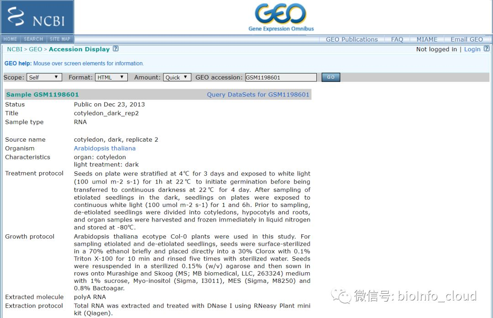
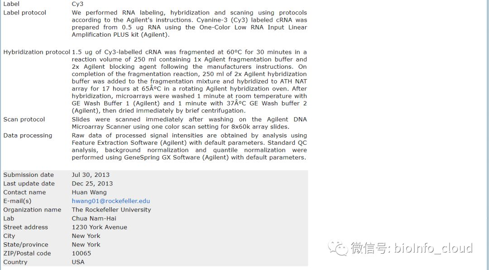
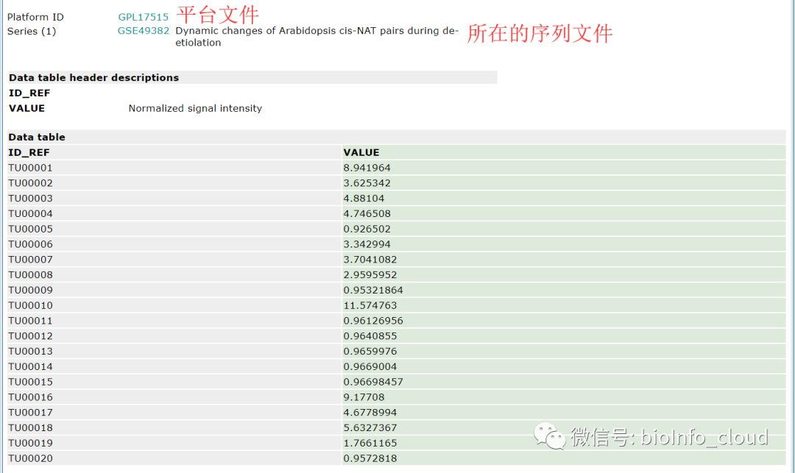

在这个页面，我们可以看见样本在进行试验处理的详细描述，以及每个探针所检测的的信号值。
除此以外，我们还可以通过GEO数据库的仓库浏览器就行特定的检索。
在GEO数据库首页点击Repository Browser

进入的页面我们可以看见，序列，平台，样本和物种的选项卡，我们可以通过其进行检索。
比如我们通过序列进行检索芯片表达数据或者甲基化数据，就点击相应的选项

点击Methylation profiling by array进入新的页面，我们就可以看到具有甲基化数据的GSE数据集的详细描述，包括标题，序列类型，样本数，物种等。
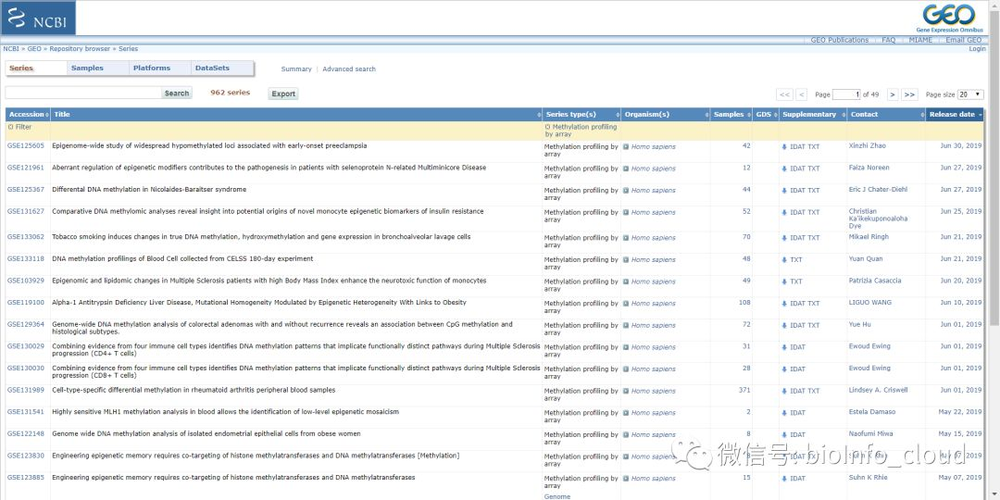
我们还可以通过关键词对结果进行筛选。比如你只和癌症有关的数据。输入cancer，结果就只有151个。
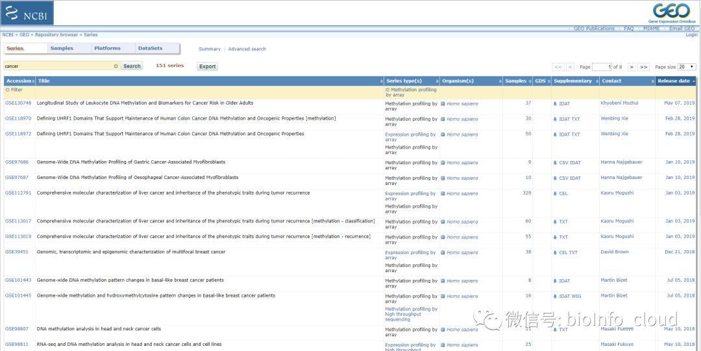
关于GEO数据库检索就介绍到这里，我们接下来就介绍GEO在线的分析工具。
二.分析工具¶
我们再看看GDS号检索的结果页面
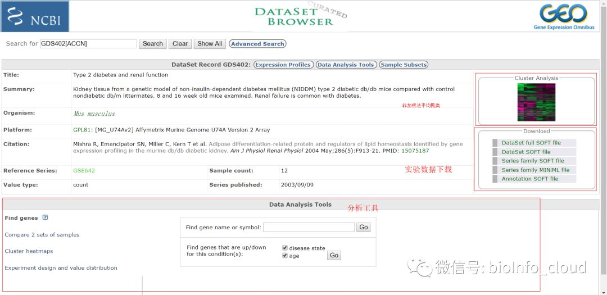
1.Find gene工具¶
该工具用于直接查找该数据集中该基因的表达谱数据。
我们以检索brca1基因为例

我们会跳到一个新的检索结果页面
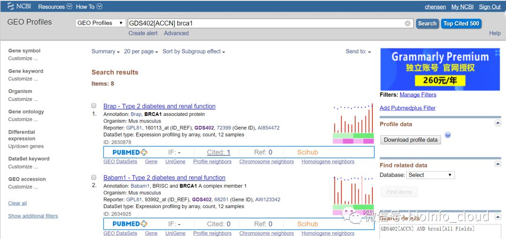
往下拉我们会找到一个Brca1的一个表达谱数据集。

点击右侧的图进入详细页面，该页面具有该基因在各个样本中的表达信息，并且样本的分组信息也有。

Find genes that are up/down for this condition(s)可以根据选择的实验筛选条件来找到一序列随该筛选条件有较明显表达差异的基因表达谱。假设我们要检索和疾病分期有关的上调或下调的基因。
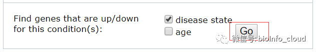
可以看到检索到了79个基因。
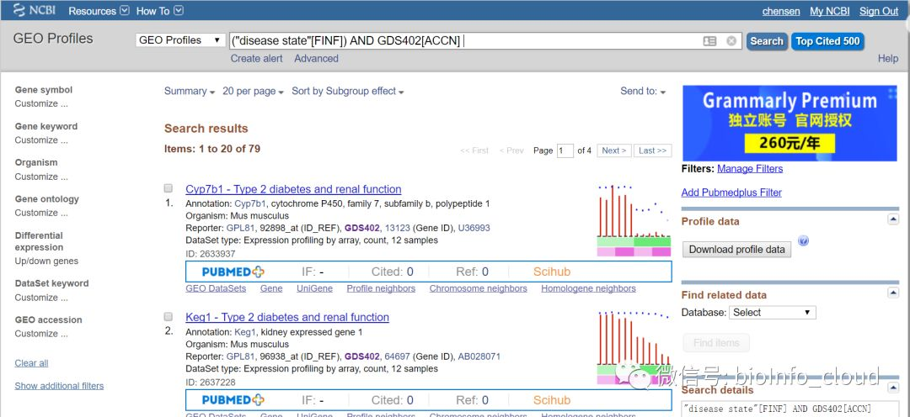
我们点击第一个基因，同样可以看到该基因的详细信息。
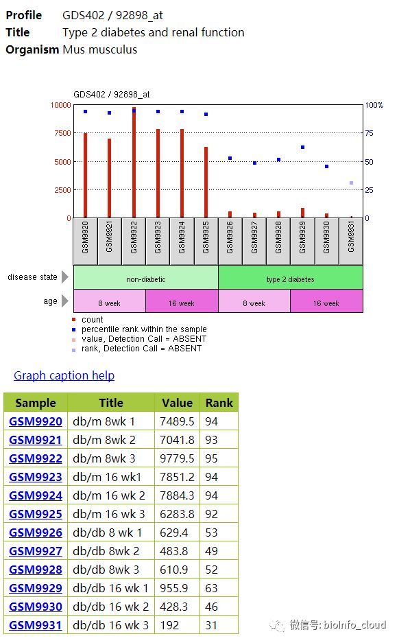
2.Compare 2 sets of samples工具¶


我们点击Step2： Select which Samples to put in Group A and Group B会弹出一个窗口，让我们自己进行分组。我们可以看见A组合B组的GSM号是一样的，需要将他分在哪一组就在哪一组点击一下就行。背景变为深灰色就表示被选中，这里将GSM9920-GSM9925定位A组，其余定位B组。点击OK.
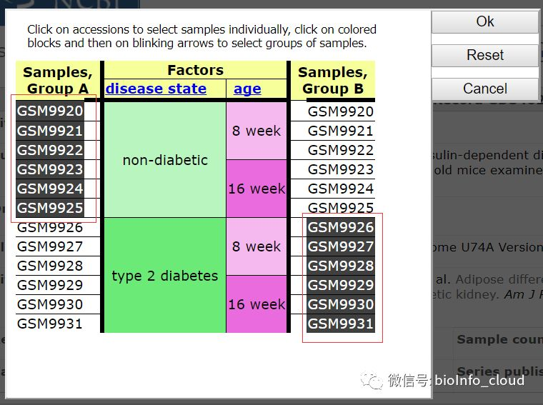
点击OK后我们会看见Step2下面会出现分组的样本编号。
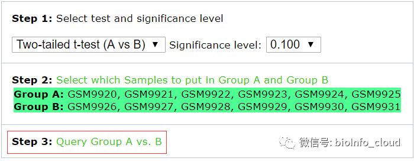
点击Query Group A vs. B我们就会获得5608个表达差异的基因。
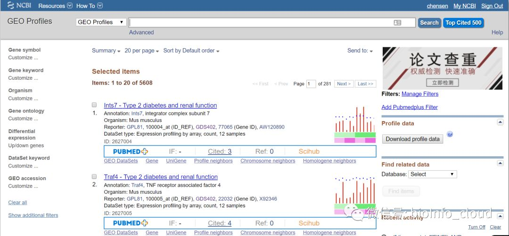
3.Cluster heatmaps工具¶
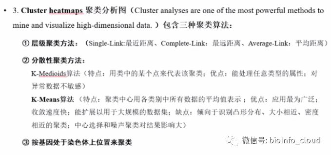
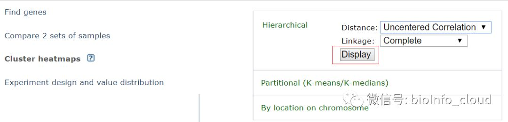
点击Display，或获取一个聚类的热图，鼠标放在热图上谁有一个红色的虚线框，可以通过上下拖动边框调整选择的区域大小。可以点击DOWNLOAD 下载数据。
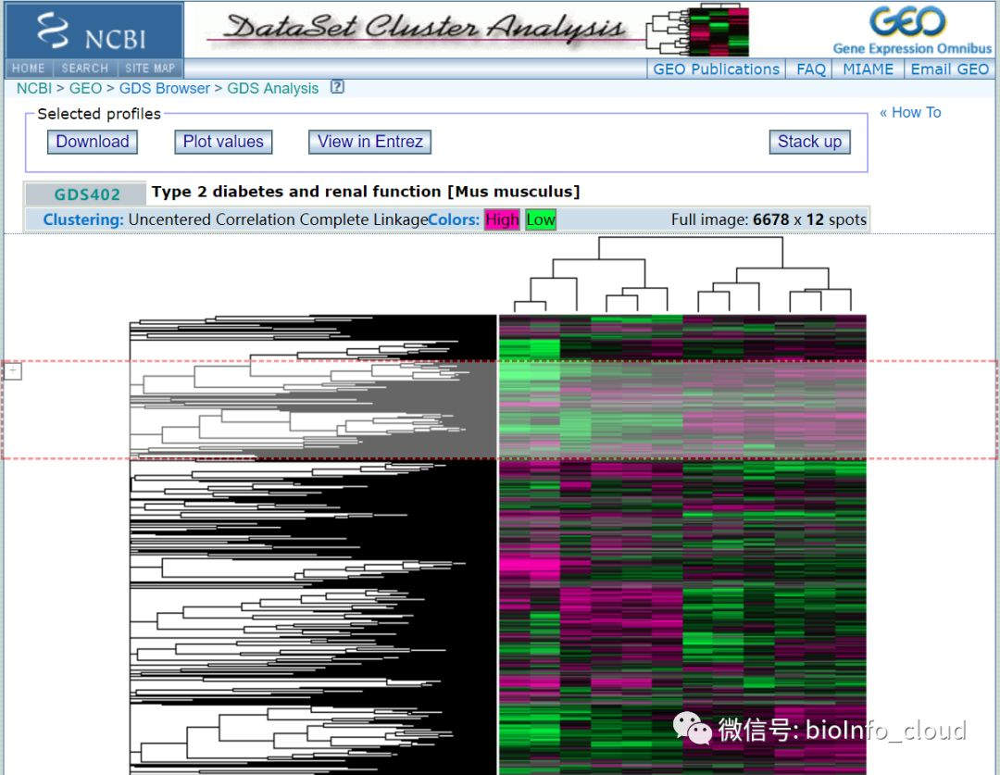
点击Stack up 可以将所选择的区域放大，能够看见基因名称。

点击Plot value可以看见探针在样本中的曲线图。
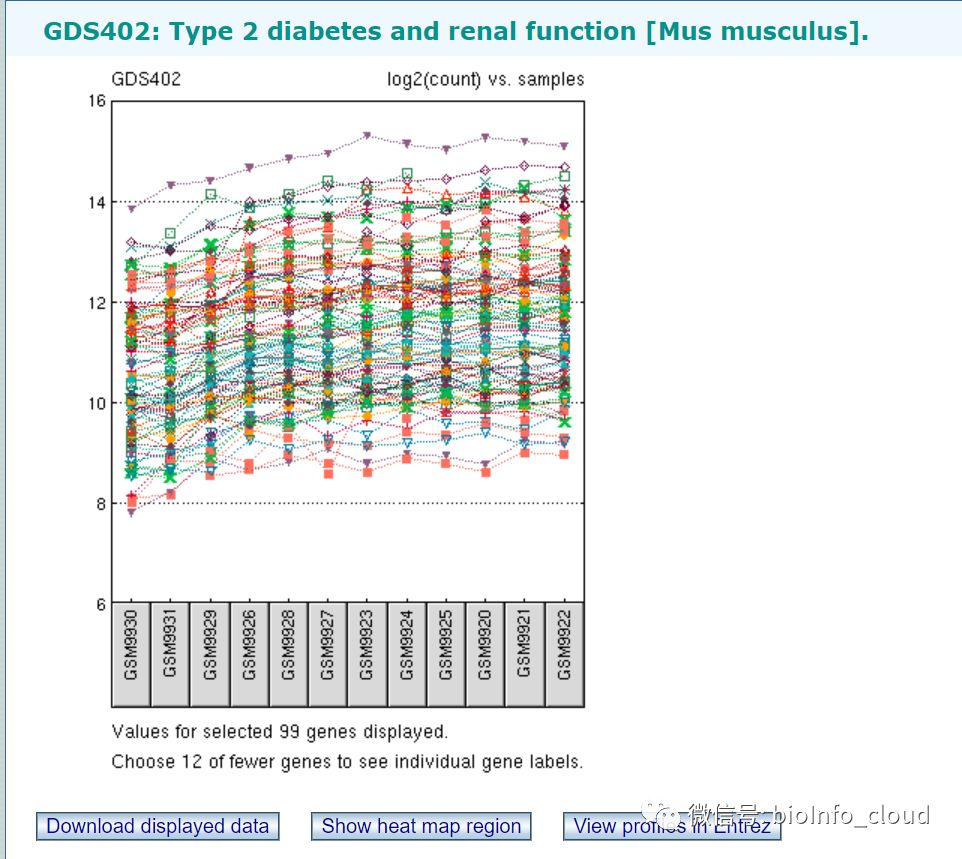
此外Cluster heatmaps工具中还有一个Partitional (K-means/K-medians)的聚类。
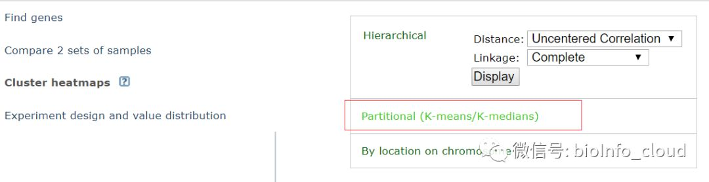
然后通过设置高低表达的颜色，设置聚类个数（cluster，2-15），这里选择4，点击Display

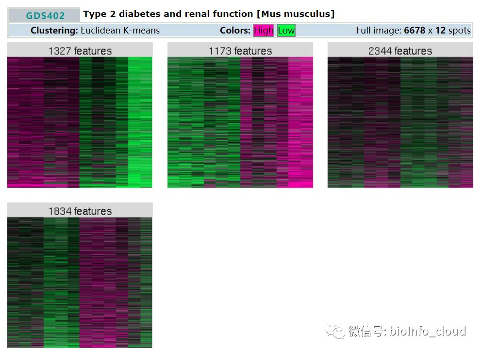
而对于By location on chromosome，是将基因定位于染色体上进行分析。
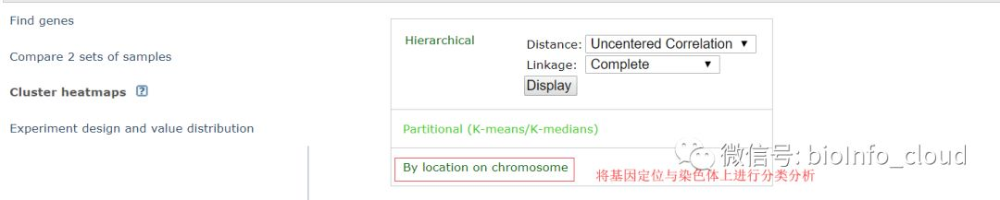
结果如下：

4.Experiment design and value distribution工具¶
这个工具就是一些箱线图

这就是每个样本中所有基因表达值的一个汇总，这是归一化后的箱线图，看起来质量不错。

5.GEO2R¶
GEO2R是一个交互式web工具，它允许用户比较GEO系列中的两组或两组以上的样本，以便识别在不同实验条件下表达不同的基因。结果显示为按重要性排序的基因表。
GEO2R使用Bioconductor项目中的GEOquery和limma R包对原始提交者提供的处理过的数据表执行比较。
与GEO的其他数据集分析工具不同，GEO2R不依赖于精心设计的数据集，而是直接查询原始的系列矩阵数据文件。这使得及时分析更多的地理数据成为可能。然而，重要的是要认识到，无论数据类型和质量如何，这个工具几乎可以访问和分析任何GEO系列。
在GSE检索结果页面就可以看到这个工具，这里以GSE49382为例，

点击Analyze with GEO2R进入页面可以看见所有样本的信息列表
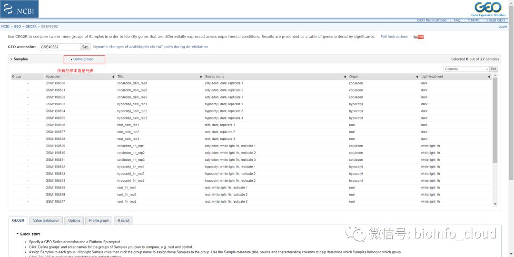
通过Define groups将样本进行分组,输入相应的组名，

点击组A，会弹出一个对话框，让你选择要归入A组的样本，点击相应的样本即可（按住Crtl多选），我这里随便点。
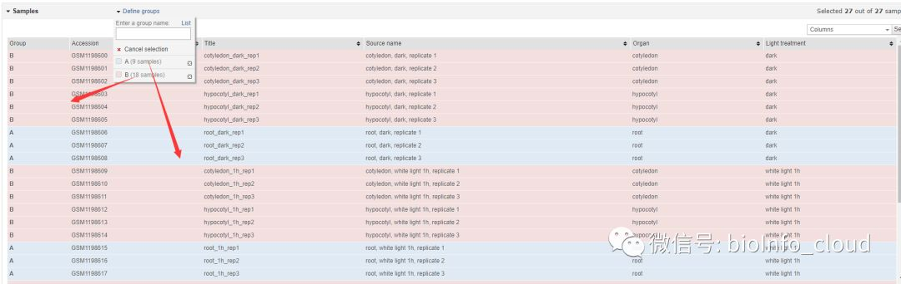
点击Top250会显示前250个基因
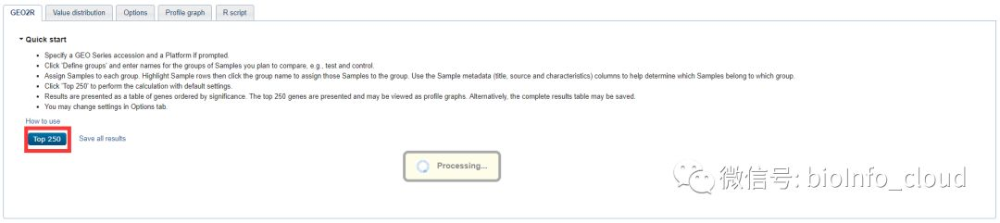
结果在浏览器中显示为按p值排列的前250个基因的表。p值最小的基因最显著。单击一行显示该基因的基因表达谱图。图中的每个红条表示从原始提交者提供的样例记录的value列中提取的表达式度量。
使用Select columns特性修改表中包含哪些数据和注释列。有关数据列含义的信息在Summary statistics部分中提供。
在Options选项卡中编辑测试参数，然后回到GEO2R选项卡并单击Recalculate来应用编辑。
要查看超过前250个结果，或者如果想保存结果，可以使用save all results按钮下载完整的结果表。下载的文件以制表符分隔，适合在Excel等电子表格应用程序中打开。

编辑options和features
（1）Value distribution
计算和查看所选示例值的分布。值是提交者提供的原始数据，在此基础上执行GEO2R计算。查看分布对于确定选择的样本是否适合进行比较非常重要。通常，以中间值为中心的值表示数据是标准化的和可交叉比较的。
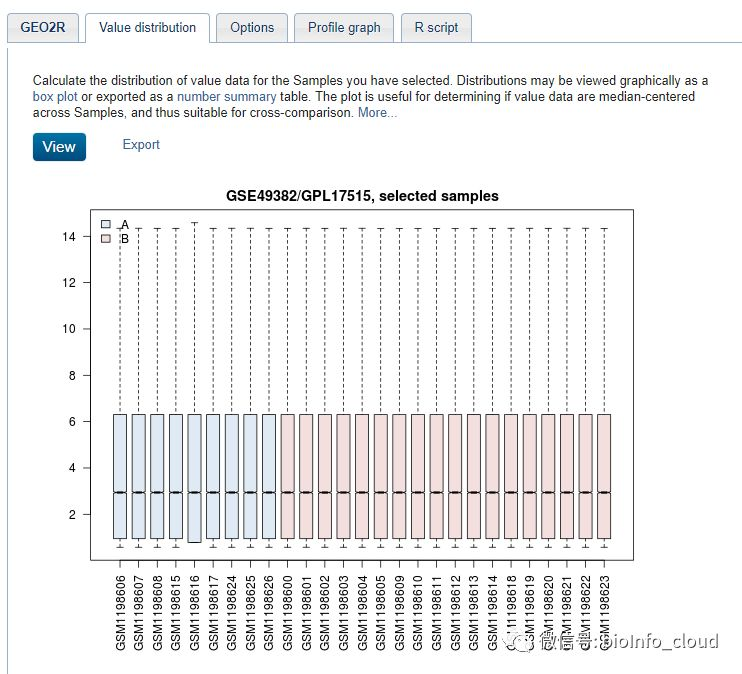
（2）Options
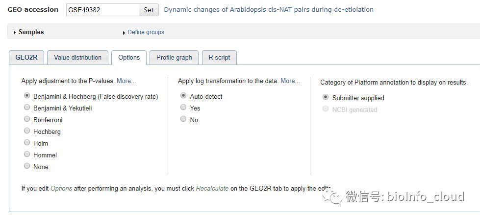
Apply adjustment to the P-values
Limma包提供了几个p值调整选项。这些调整，也称为多次测试纠正，试图纠正错误阳性结果的发生。默认选择Benjamini & Hochberg错误发现率方法，因为它是对微阵列数据最常用的调整，并在发现统计上重要的基因和限制假阳性之间提供了良好的平衡。
Apply log transformation to the data
GEO数据库接受各种数据值类型，包括logged和未logged的数据。Limma包需要使用logged数据为了解决这个问题，GEO2R有一个自动检测特性，它检查所选样本的值，并自动执行log2转换。可选择是否自动转换。
Category of Platform annotation to display on results
选择要在结果上显示的注释类别。基因注释来自于相应的平台记录。有两种注释类型:
NCBI生成的注释可用于许多记录。这些注释是通过从平台中提取稳定的序列识别信息，定期查询Entrez基因和UniGene数据库，生成一致的、最新的注释而得到的。默认情况下选择基因符号和基因标题注释。NCBI生成的注释的其他类别包括GO术语和染色体位置信息。
提交者提供的注释可用于所有记录。这些表示提交者提供的原始平台注释。请注意，提交者提供的注释在样式和内容上有很多多样性，而且自提交时起可能就没有更新过。
（3）Profile graph
通过从平台记录的ID列输入相应的标识符来查看特定的基因表达谱图。此功能不执行任何计算;它只是在样本间显示基因的表达值。要使此功能正常工作，不需要定义示例组。

（4）R script
此选项卡打印用于执行计算的R脚本。这些信息可以保存下来，作为计算结果的参考。


更新: 2021-08-27 16:15:30 原文: https://www.yuque.com/doublehelix/bioinfonotes/ekymes